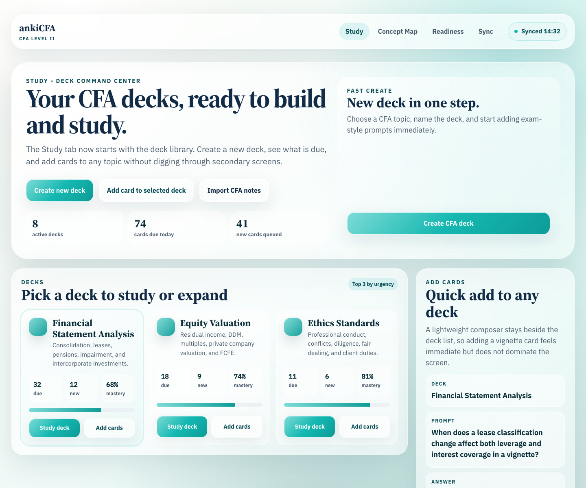
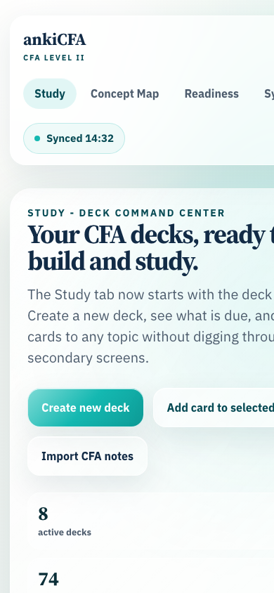

Study - Deck-First CFA Workspace
Freeze packet for pixel-perfect production implementation of the approved Lavish Study concept.
Reference Screenshots
Use these images as the visual comparison targets for desktop and Android implementation.
Desktop

Phone

Implementation Notes
- Preserve the deck-first Study workspace and reduce screen clutter.
- Show only up to three deck cards on the default surface.
- Make deck creation, studying a deck, and adding cards easy from this screen.
- Keep tabs: Study, Concept Map, Readiness, Sync.
- Preserve the premium pearl/turquoise liquid glass UI and avoid stock Anki / AnkiDroid styling.
- Do not add source-node concepts:
Open source node,FRA source node, orsource node.
Acceptance Bar
Production must match source.html visually as closely as platform constraints allow. Desktop and Android must preserve the same concept, hierarchy, typography feel, colors, spacing, and interaction model. Intentional deviations require documented rationale and approval.